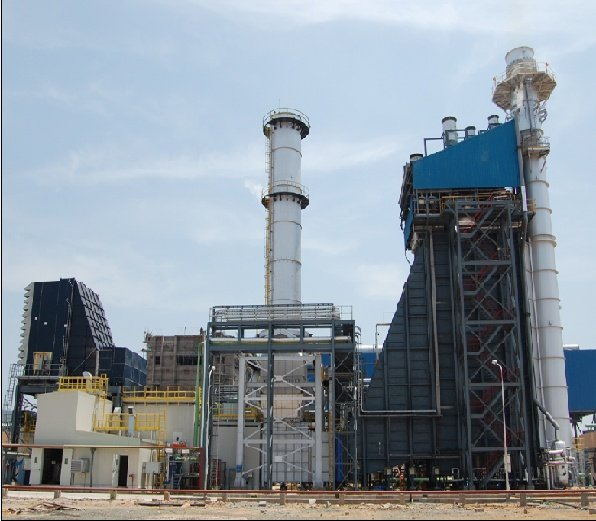
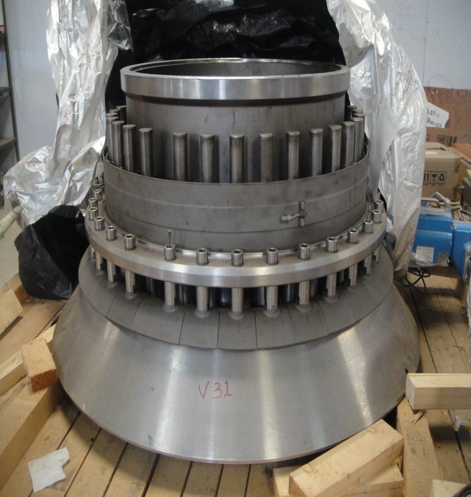
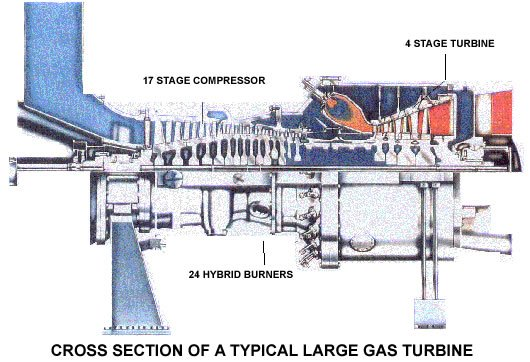
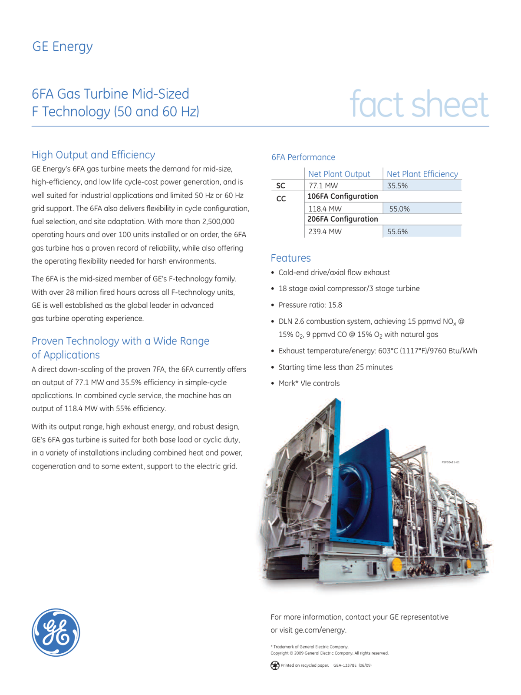
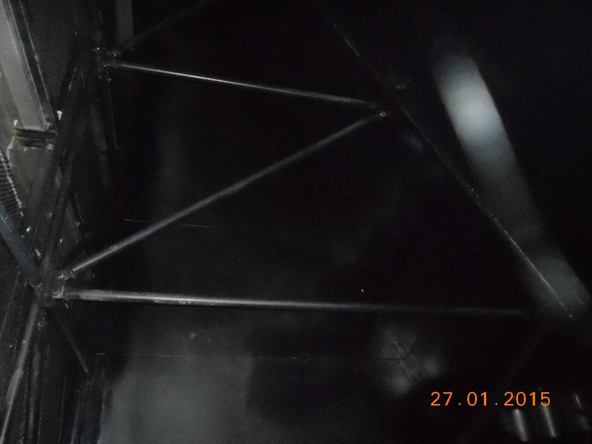
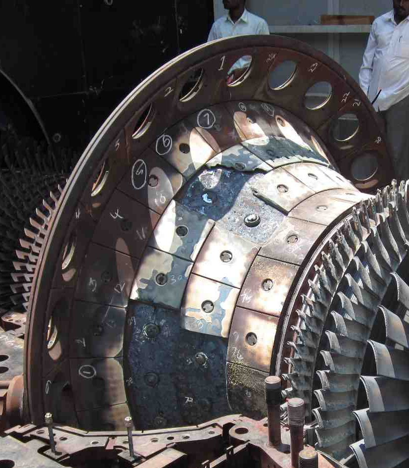

VGTPS Operations Study of a 187 MW Combined-Cycle Gas Plant
An operations management study of TANGEDCO's Valuthur Gas Turbine Power Station in Ramanathapuram, Tamil Nadu — a 187.2 MW combined-cycle plant (Phase I 95 MW + Phase II 92.2 MW) running on natural gas. Built from VGTPS plant training documents collected during in-plant training. Applies the five operational lenses in TANGEDCO's own performance-optimisation framework — Operation & Maintenance, Crisis Management, Safety, Reliability, Efficiency — to identify improvement levers.
MBA Operations · TANGEDCO Field StudyCombined-CycleGE Frame 6FA + AnsaldoSWOTCapital ROI5 Operational Lenses
187.2 MW
Combined capacity (Ph I 95 + Ph II 92.2)
88% PLF
Phase I peak year 2006-07 (Bronze Shield)
₹785 Cr
Total project cost (Ph I ₹385 + Ph II ₹400)
5
Operational lenses applied to plant data
80%
Actual gas supply vs contracted (700k/888k SCM/day)
Part IOperations Study — performance, five lenses & roadmap
Context
The plant & the study

A combined-cycle gas power station of the VGTPS class — gas-turbine hall (left), heat-recovery steam generator and stack (right). Source: TANGEDCO / GE gas-turbine in-plant training material.
The Plant
Valuthur Gas Turbine Power Station, Ramanathapuram, Tamil Nadu. Two phases, both combined cycle: Phase I commissioned 2002–03 (GE Frame 6FA GTG 59.9 MW + BHEL STG 35.1 MW = 95 MW). Phase II commissioned 2008–09 (Ansaldo/Italy GTG 58.5 MW + QJPS STG 33.7 MW = 92.2 MW). Operated by TANGEDCO, the Tamil Nadu state generation utility.
My Role
In-plant training as a B.E. EEE student in February 2025, with subsequent MBA operations study using the materials and notes I collected on-site. The TANGEDCO training pack (prepared by plant faculty in December 2021) included the official VGTPS performance presentation, the process-optimisation deck used to train AEs/AEEs, and the PAT (Perform Achieve Trade) energy-efficiency class.
My Approach
Applied the five operational lenses TANGEDCO itself uses for GTPS process optimisation — O&M, Crisis Management, Safety, Reliability, Efficiency — to the multi-year operational data in the VGTPS plant documents. Built SWOT, ranked improvement opportunities, and proposed a phased roadmap.
What I Took Away
A 187 MW combined-cycle plant is a three-axis optimisation: thermal efficiency (Brayton + Rankine), reliability (forced outages cost more than maintenance), and fuel supply (single GAIL pipeline = single point of failure). The best operating year — Bronze Shield 2006-07 — happened when all three axes aligned. Most other years, at least one was constraining.
Plant Performance
What the multi-year data shows

A gas-turbine rotor with its stacked compressor and turbine blade rows — the kind of rotor whose vibration-driven replacement (June 2012) drove the 54% PLF year visible in the table below. Source: GE gas-turbine training material.
All numbers below are from VGTPS plant performance documents in the official TANGEDCO training pack. PLF figures vary widely year-to-year — the spread is informative.
Year
Generation (MU)
PLF %
Cost ₹/kWh
Notable
2003–04
665.55
79.76
—
First full year
2005–06
697.39
83.80
1.60
—
2006–07
727.54
87.42
1.64
★ Bronze Shield — 3rd best in India
2008–09
703.50
84.53
1.51
—
2010–11
562.47
67.59
1.51
May 2010 stator earth fault, 3-month outage
2012–13
449.41
54.00
1.57
June 2012 rotor replacement
2013–14
729.33
87.64
1.90
Best year after recovery
2017–18
677.14
81.40
2.35
—
2020–21
478.34
57.48
22.34
Fuel price spike + COVID demand drop
What this tells an operations manager
Cost of generation swung from ₹1.32/kWh (2004-05) to ₹22.34/kWh (2020-21) — a 17× swing driven almost entirely by gas-price exposure and reduced dispatch. PLF degraded from 87% to under 60% over the same period. This is a fuel-supply-chain problem dressed up as a power problem. The plant ran best when fuel was cheap and abundant; ran worst when either was constrained.
Five Operational Lenses
TANGEDCO's GTPS optimisation framework
The TANGEDCO process-optimisation training material structures plant optimisation around five lenses. I applied each to the VGTPS data.
O & M
Crisis Management
Safety
Reliability
Efficiency
Lens 1 — Operation & Maintenance. VGTPS follows OEM-recommended inspection schedules. Real data from the plant documents shows the actual fired hours at each inspection — and most exceed the OEM trigger.
Inspection
OEM trigger
Actual fired hours
Date
1st Combustion Inspection
8,000 hrs
11,226 hrs
May–Aug 2004
2nd Combustion Inspection
16,000 hrs
22,709 hrs
Dec 2005
1st Hot Gas Path Inspection
24,000 hrs
36,396 hrs
Aug 2007
Major Inspection
48,000 hrs
72,450 hrs
Mar–May 2012
4th Combustion Inspection
32,000 hrs after MI
83,131 hrs
Nov 2013
5th Combustion Inspection
40,000 hrs after MI
105,679 hrs
Aug 2016
The maintenance-deferral pattern
Every recorded inspection ran 30–50% beyond OEM-recommended fired hours. This is common in utility plants where dispatch demand competes with maintenance windows — but it accumulates risk. The May 2010 stator earth fault and the June 2012 forced major inspection (rotor replacement due to vibration and Stage-II bucket damage) both happened in this pattern's shadow.
Lens 2 — Crisis Management. Real failure events from VGTPS documents (Phase I and Phase II major breakdowns):
When
Unit
Event
Outage
May 2010
Ph I GTG
Tripped due to stator earth fault
17.05.10 → 23.08.10 (3 months)
June 2012
Ph I GTG
Tripped due to heavy internal damage; rotor replacement
26.06.12 → 17.10.12 (~4 months)
Jan 2010
Ph II GTG
Hand-tripped due to high vibration in turbine side
08.01.10 → 07.05.11 (16 months refurbishment)
Apr 2013
Ph II GTG
Gear box oil leak arresting work
24.04.13 → 04.06.13 (~6 weeks)
Jan 2015
Ph II GTG
Tripped — high bearing vibration
23.01.15 → 26.09.16 (~20 months)
The crisis pattern
Most major outages are rotating-equipment failures — stator, rotor, bearings, gearbox. Each takes months to recover. The Phase II 2015 vibration trip cost ~20 months of generation. This is the single biggest reliability lever the plant has.
From the training material
TANGEDCO's process-optimisation deck explicitly lists crisis items at sister plant TKGTPS: blackout conditions, STG vacuum problem, less gas allocation, deaerator pressure problem, GT wheel-space temperature. Same fleet, same issues — there's a pattern, not just bad luck.
Lens 3 — Safety. Combined-cycle gas plants combine multiple safety domains: high-pressure natural gas, high-temperature combustion (~1,100 °C reduction zone), high-voltage generation (11 kV → 110 kV switchyard), and rotating equipment at 3,000 rpm. From the training material, the operations team prioritises:
01
Gas leak detection across the GAIL pipeline interface, gas yard, and combustor manifolds — natural gas leaks are the most consequential single failure mode in a GTPS.
02
Hot-section interlocks. Wheel-space temperature, exhaust gas temperature, combustion liner integrity all wired into automatic trip logic — these are the same parameters my Project 08 adaptive relay study touched on the electrical side.
03
Statutory inspections per Indian Electricity Rules and CEA standards. The 5 statutory inspections done on Phase I (combustion, HGPI, major) are not just OEM-recommended — they're regulatory commitments.
Lens 4 — Reliability. Phase I has clearly outperformed Phase II in reliability terms. From the documents:
Phase I — GE Frame 6FA
2006-07 PLF: 87.42% (Bronze Shield year). 2013-14 PLF: 87.64% (post-recovery best). Average PLF across 18 years: ~75-80% in the operational years. Two major incidents (May 2010, June 2012) but otherwise stable.
Phase II — Ansaldo
Has had 4 major outages in 13 years: Jan 2010 (16-month refurbishment), Apr 2013, Jan 2015 (20-month repair), repeated vibration issues. Zero-generation years: 2010-11 and 2015-16. Best year was 2017-18 at 74.30% PLF — well below Phase I's peak.
Reliability lesson
Phase I (GE/BHEL) has delivered substantially better reliability than Phase II (Ansaldo/QJPS) over comparable operating windows. Specification choices made at procurement compound for two decades. The implications for any future capacity addition decision are obvious.
Capital ROI is excellent when the plant runs
Real data from the documents: 2005-06 Combustion Inspection — capex ₹62.6 lakh, revenue earned ₹393.6 Cr, payback in 0.58 days. The 2018-19 6th Combustion Inspection: capex ₹3.4 Cr, revenue ₹343.9 Cr, payback in 3.6 days. When the unit runs, maintenance pays for itself in days.
Lens 5 — Efficiency. The training material is explicit about the efficiency levers. Standard rules-of-thumb for any GTPS, applied to the VGTPS context:
01
GT inlet air temperature. Ambient-sensitive — Brayton cycle output drops as inlet temp rises. Evaporative cooling is the standard mitigation, considering ambient RH. (Concept from training material; no specific VGTPS cooling-installation data in the documents I have.)
02
Suction-filter ΔP. Training-material rule: 250 mm WC pressure drop = 2% energy loss. Online compressor washing protocol triggered by ΔP monitoring is standard practice.
03
Stack temperature reduction. Training-material rule: every 22 °C reduction in stack temp = 1% efficiency improvement. HRSG performance directly drives this.
04
Auxiliary consumption. VGTPS Phase I real data: aux consumption was 5.55–6.60% of total generation across the 5-year window. VSD retrofits on cooling pumps and ID fans typically reduce auxiliary consumption by 15–30% (industry benchmark, not measured at VGTPS).
05
Optimum operating point. Training material: GT at maximum load, boiler at ~2/3 of full load; avoid operating boiler below 25% load. Part-load efficiency penalty is a known GTPS weakness.
Ageing Phase II equipment with repeated failure history
Knowledge attrition as senior operators retire
Recommendations
Phased operational roadmap
Grouped by horizon. Where a number is industry-typical (not from VGTPS data), it is labelled.
0–2 yr
Tighten the maintenance-deferral pattern. Six recorded inspections at VGTPS Phase I all ran 30–50% beyond OEM trigger hours. Establish a hard cap (say, <15% over OEM) and make exceptions require written justification. Most directly addresses the conditions that led to the May 2010 and June 2012 outages.
0–2 yr
Vibration analytics on rotating equipment. Three of five Phase II major outages and one of two Phase I major outages were vibration-related. Continuous-monitoring vibration sensors with trend analysis are mature, low-cost, and would catch the dominant failure mode early.
0–2 yr
Online compressor water-washing protocol triggered by inlet-filter ΔP. Training-material rule: 250 mm WC ΔP = 2% energy loss. Near-zero capex, recovers 1–3% continuous power (industry-typical figure, not measured at VGTPS).
2–5 yr
VSD retrofits on auxiliary motors. VGTPS Phase I aux consumption is 5.55–6.60% of total gen. Industry-typical 15–30% aux-consumption reduction with VSDs on cooling pumps, ID fans, etc. Translates to ~1–2% net plant output gain.
2–5 yr
Inlet evaporative cooling feasibility study for Phase I. The principle is well-established in the training material; specific VGTPS economics weren't worked out in the materials I have. Should be modelled with current Tamil Nadu peak-summer pricing before committing capex.
5–10 yr
Fuel-supply diversification is the single biggest economic lever. 2020-21 cost spike to ₹22.34/kWh shows the plant's vulnerability. LNG spot-market access, dual-fuel capability, or hydrogen co-firing readiness are all worth NPV modelling as gas markets evolve.
5–10 yr
Phase II replacement vs. refurbishment decision. Given the Ansaldo unit's pattern (16-month + 20-month outages, repeated vibration), a structured economic comparison of continued refurbishment vs. replacement with proven Phase-I-class equipment is warranted.
A note on this study's scope
This is an operations-management study based on VGTPS plant documents collected during February 2025 in-plant training (the TANGEDCO training pack was prepared by plant faculty in December 2021), structured around the five operational lenses TANGEDCO itself uses for GTPS process optimisation. Plant performance data (capacities, PLF, cost, fuel consumption, breakdown events, capital ROI) is drawn directly from official VGTPS presentations. Recommendations combine these real numbers with industry-typical figures (clearly labelled where used). This is not a full financial NPV/IRR study — full cash-flow modelling would require detailed dispatch projections, fuel-price scenarios, and discount-rate assumptions beyond what's available in the training materials. The capital-ROI examples shown use the plant's own actual capex-vs-revenue figures.
Part IIPerformance & Electrical Study — thermodynamics, systems & protection
Thermodynamics
Brayton + Rankine — the combined cycle

Cross-section of a large gas turbine — multi-stage axial compressor → combustors → turbine. This is the Brayton-cycle topping engine; its exhaust drives the Rankine bottoming cycle. Source: GE gas-turbine training material.

GE Frame 6FA fact sheet — the gas turbine at the heart of VGTPS Phase I (≈77 MW class; 59.9 MW GTG at the plant). Source: GE Energy, GEA13378E.
From the TANGEDCO process-optimisation training material. VGTPS uses the standard combined-cycle architecture: a Brayton-cycle gas turbine as the topping cycle, with exhaust heat driving a Rankine-cycle steam turbine as the bottoming cycle.
Brayton (topping)
Rankine (bottoming)
Combined cycle
Why GTPS is sensitive
The cycle
Air compressor → combustor → turbine → exhaust. Air is compressed (pressure ratio 10:1–18:1 typical), mixed with natural gas and combusted at ~1100–1350 °C firing temperature, then expanded through the turbine to drive the generator and the compressor itself. Standard Brayton cycle, named after George Brayton (1870).
Key parameters
Two parameters dominate Brayton efficiency: pressure ratio (higher = higher efficiency, up to a metallurgical limit) and gas turbine inlet temperature (higher = higher specific output, limited by blade materials). The GE Frame 6FA at VGTPS Phase I is rated 59.9 MW at ISO conditions.
The cycle
Boiler → turbine → condenser → pump → boiler. The Rankine cycle uses water as working fluid. At VGTPS, the HRSG (Heat Recovery Steam Generator) replaces a conventional boiler — using the gas turbine exhaust as the heat source. The steam drives a BHEL 35.1 MW steam turbine (Phase I) or QJPS 33.7 MW (Phase II).
Steam parameters
From TANGEDCO's training reference table: a 60 MW BHEL set typically runs at 482 °C with a turbo-set heat rate of ~2,367 kcal/kWh. Larger 100 MW sets at 90 ata / 535 °C achieve ~2,310 kcal/kWh. VGTPS steam turbines fall in the 35-MW class.
Why combine the two cycles
From the training material: "The Brayton cycle has high source temperature and rejects heat at a temperature that is conveniently used as the energy source for the Rankine cycle." Combined cycle efficiency reaches ~50-60% compared to ~30-40% for simple-cycle gas turbines or steam plants alone. Both VGTPS phases are combined cycle by design — the GTG and STG are sized roughly 60:40, with the HRSG sized to capture exhaust heat without back-pressuring the gas turbine.
→
VGTPS Phase I architecture: GTG 59.9 MW + STG 35.1 MW = 95 MW. The GTG-to-STG ratio (63:37) is typical for combined-cycle designs of this vintage.
→
HRSG sizing: Steam pressure and superheat temperature have to match what the gas turbine exhaust can supply without imposing back-pressure on the GT — that would lose more in the topping cycle than it gains in the bottoming cycle.
→
Auxiliary consumption: Real Phase I plant data (FY2016-17 to FY2020-21): aux consumption was 5.55–6.60% of total generation. Aux power runs the cooling water pumps, fans, instrument power, and the BOP — a Rankine plant has more of these than a simple-cycle GT.
From the TANGEDCO training deck — explicit list of GTPS advantages and disadvantages:
Advantages
Lower installation cost. Quick start-up and shutdown (10–20 min to full load — the standard GTPS pitch). Higher combined-cycle efficiency than conventional thermal. Less cooling water. Less pollution (no ash, low-NOx via DLN). Mobile, suitable for dry areas.
Disadvantages (verbatim)
Shorter component life, costly spares.Highly sensitive to ambient conditions. Lower efficiencies at reduced loads. Clean inlet air required (filters degrade with use). Inlet air temperature and pressure highly affect performance. Severe combustion conditions = more wear & tear.
Why ambient sensitivity matters at VGTPS
A gas turbine is an air-breathing machine. Hotter ambient air is less dense, so less mass flows through the compressor per second, so less work comes out. Ramanathapuram summer temperatures regularly exceed the ISO 15 °C reference by 15–25 °C. Industry-typical derating is in the 0.5–0.7% per °C range above ISO (not measured at VGTPS specifically — published GT manufacturer figures).
Inlet filter pressure-drop penalty
Coastal salt + dust load the inlet filters — pressure drop rises as they load up. The TANGEDCO training material's rule of thumb: 250 mm WC suction-filter ΔP = 2% energy loss. Online compressor washing protocols, triggered by ΔP monitoring, recover some performance between maintenance windows.
Plant Systems
The six schemes that make up the plant

Heat-recovery steam generator (HRSG) tube banks — the Rankine-cycle bottoming side that captures gas-turbine exhaust heat to raise steam. Source: GE gas-turbine training material.

Inside a gas-turbine casing during a major inspection — the diaphragm/stator bore. These OEM-scheduled inspections are the O&M events that punctuate the plant's performance record. Source: GE gas-turbine training material.
From the training material: a GTPS is built up from six interlocking schemes. Each was covered in the in-plant training:
01
Air scheme. Inlet filter house → silencer → compressor. The whole gas turbine output is gated by how well this works. Coastal location makes this acute.
02
Gas scheme. GAIL natural gas pipeline → gas yard → metering/regulation → gas valves → combustor. Wobbe Index variations require combustor tuning. Contractual quantity: 888,000 SCM/day; actual ~700,000 SCM/day (~80%) per Dec 2021 plant doc.
03
Flue gas scheme. Gas turbine exhaust → HRSG (heat recovery to steam side) → stack. Stack temperature is a key efficiency lever — training-material rule: every 22 °C reduction = 1% efficiency improvement.
04
Steam scheme. HRSG → main steam → steam turbine → condenser → feedwater pumps → back to HRSG. Vacuum maintenance at the condenser is a recurring crisis-management item across TANGEDCO's GTPS fleet (per TKGTPS reference in the training deck).
05
Water scheme. Cooling water (for condenser and lube oil coolers), demineralised water (for HRSG make-up), service water. Closed-loop where possible to reduce withdrawal.
06
Electrical scheme. Generator → unit transformer → 110/230 kV switchyard → feeders to grid. Auxiliary transformer feeds plant BOP loads. This is the scheme Project 08 (Adaptive Relay) studies in depth.
Electrical Protection
The standard protection zones for a generator-transformer set
The protection functions below are standard IEEE C37.2 device numbers applied to any utility-scale gas turbine generator-transformer set. Specific VGTPS settings I worked out are in Project 08 — Adaptive Relay Coordination.
Device
Function
Protected Element
87G
Generator differential — biased, with restraint
Generator stator winding (zone-protected)
87T
Transformer differential
Generator transformer (Δ-Y bank)
87B
High-impedance bus-bar differential
110 kV bus-bar (87B settings worked out in Project 08)
64REF
Restricted earth fault — low impedance
Transformer neutral path
40
Loss of excitation — offset Mho on R-X plane
Generator (loss of field)
46
Negative sequence — inverse-time I²t
Generator rotor thermal protection
21
Distance — Mho/Quadrilateral, multi-zone
Outgoing transmission lines (back-up)
63
Buchholz — gas/oil-actuated mechanical
Generator transformer (incipient internal faults)
67
Directional overcurrent
Feeder back-up protection
Connection to Project 08
My B.E. final-year project built directly on what I documented here. 87G is the central function studied in Project 08's adaptive coordination scheme. 87B (with its 172 V stability voltage derived from VGTPS plant CT data), 87T, 40, 46, and 21 are all integrated into the coordination matrix in that project. P01 documents what the plant has; P08 proposes how one of those zones could be made adaptive to operating mode.
Performance Levers
What moves the needle on a GTPS
From the TANGEDCO training material's "Improvement in Thermal Efficiency of GTPS" section. Each item below has the source's own rule of thumb where one is given.
01
GT inlet air temperature management. Air density falls as temperature rises. The standard mitigation is evaporative cooling, considering ambient relative humidity (training material is explicit on the RH dependency).
02
Suction filter ΔP control. Training-material rule: 250 mm WC ΔP = 2% energy loss. Online compressor washing triggered by ΔP monitoring is standard practice.
03
GTC blade integrity. Blade coating, minimising stage leakages, periodic replacement of inlet air filters, avoiding compressor air leaks — all preserve GT compressor efficiency.
04
Combustion control. Optimum air-fuel ratio, IGV (inlet guide vane) position, GT exhaust temperature targeting — these are the operator's primary control levers during dispatch.
05
HRSG stack temperature. Training-material rule: every 22 °C reduction in stack temp = 1% efficiency improvement. Maintain superheat spray to keep 540 °C, look after CPH (condensate pre-heater) and deaerator parameters.
06
STG vacuum integrity. Air ingress into the condenser kills vacuum, which kills Rankine cycle output. Periodic vacuum testing, gland steam management.
07
Auxiliary power reduction. VSD retrofits on cooling pumps, fans, etc. VGTPS Phase I aux consumption ran 5.55–6.60% of total generation across FY2016-17 to FY2020-21 (real plant data) — every percentage point recovered is direct net output gain.
08
Operating-point discipline. Training material: "GT at maximum load. Boiler at 2/3 of full load. Avoid operating boiler below 25% of full load." Part-load efficiency drops disproportionately.
Crisis-Management Items
What goes wrong in a GTPS — from the plant's own list
The TANGEDCO training material lists the crisis-management items operators are trained on at the sister plant TKGTPS. Same equipment fleet, same issues:
Blackout conditions
Loss of grid connection or auxiliary power. Plant must protect itself, ride through, or shut down safely.
STG vacuum problem
Air ingress at condenser flange, gland seal failure, or condenser tube leak. Steam turbine output falls immediately; if vacuum collapses, trip.
Less gas allocation
VGTPS currently receives ~80% of contracted gas (700k vs 888k SCM/day per Dec 2021 doc). Limits dispatch even when demand exists.
Deaerator pressure problem
Deaerator regulates dissolved-oxygen content of feedwater. Pressure excursions risk HRSG tube corrosion and water-side fouling.
GT wheel-space temperature
Wheel-space temperature is an interlock parameter. Excursion triggers automatic trip to protect rotor and bearings.
Major rotating-equipment failure
Real VGTPS events I documented: May 2010 (stator earth fault, 3-month outage), June 2012 (rotor replacement, 4-month outage), Phase II Jan 2010 / Jan 2015 (vibration failures, 16-month and 20-month outages respectively).
A note on this study's scope
This is a structured documentation study from in-plant training, not a performance test or measurement campaign. Plant data (capacities, equipment, aux consumption, breakdown events, gas supply figures) comes directly from the official TANGEDCO training pack. Thermodynamic and efficiency rules of thumb (e.g., "22 °C stack reduction = 1% efficiency") are taken verbatim from the training material. Industry-typical figures (e.g., "0.5–0.7%/°C ambient derating") are labelled as such and reflect published manufacturer figures for similar-class machines — they are not numbers I measured at VGTPS. Detailed relay coordination for VGTPS Unit I is in Project 08, which uses real CT ratios, fault levels, and the stability voltage from the plant documentation.